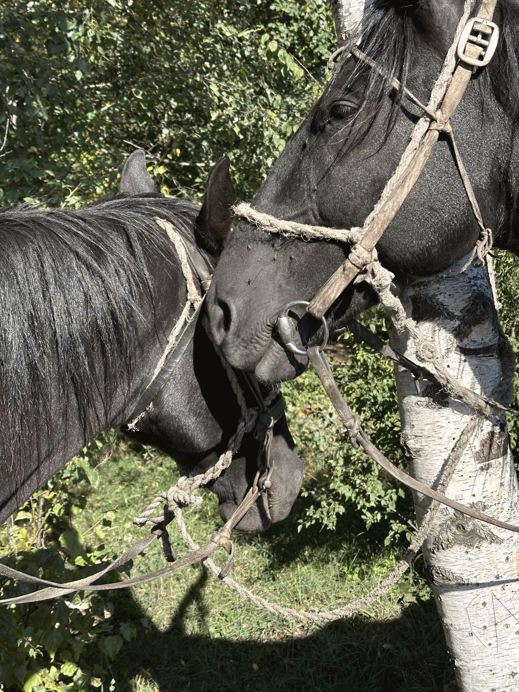
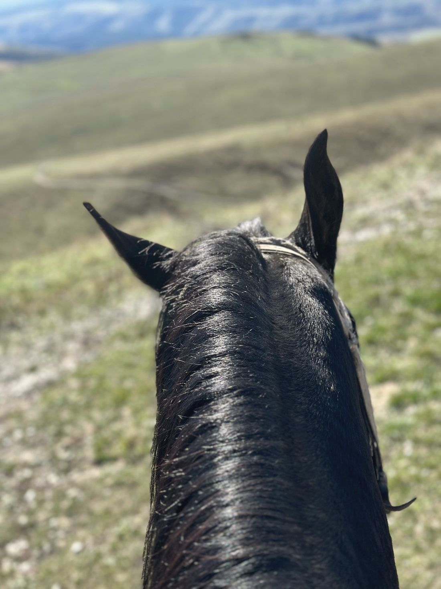
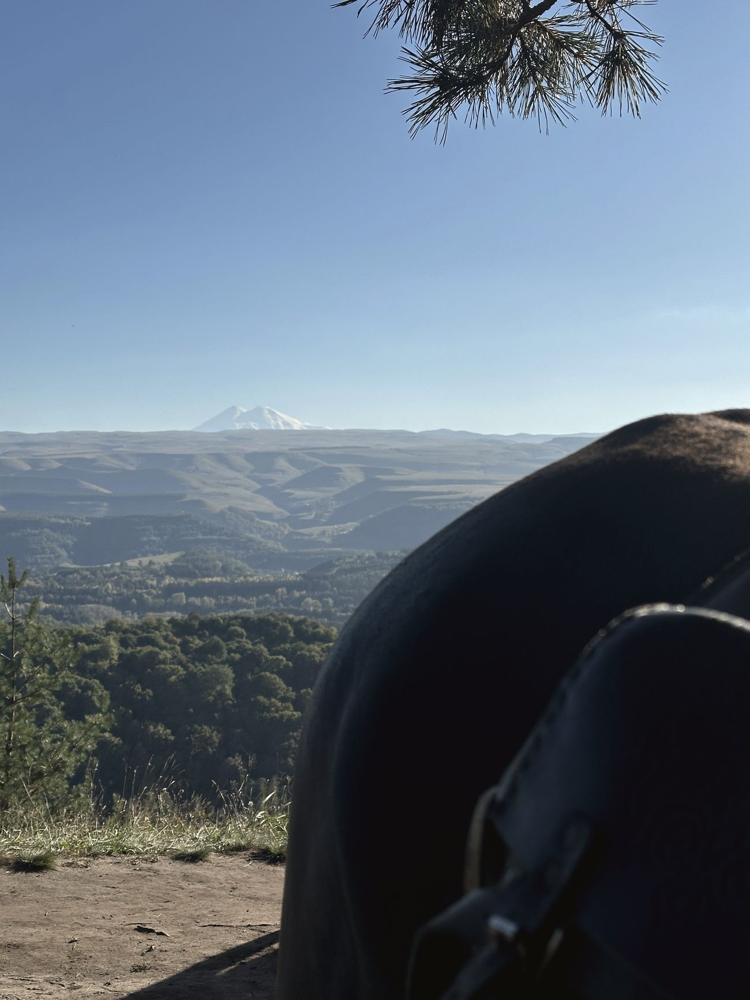

01Олимпийский парк
Первое знакомство
Для тех, кто давно хотел попробовать, но немного страшно. Знакомимся с лошадью, спокойно разбираем основы и выходим на лёгкую прогулку.

Конные прогулки в горах Кисловодска — туда, где город остаётся внизу, а впереди открывается Кавказ.
От первого знакомства с лошадью до большого маршрута в горы. Мы создаём не точку на карте, а день, который хочется запомнить.

Для тех, кто давно хотел попробовать, но немного страшно. Знакомимся с лошадью, спокойно разбираем основы и выходим на лёгкую прогулку.

Красивый, понятный маршрут — увидеть Кисловодск иначе без большой горной нагрузки.

Город остаётся внизу, впереди — холмы и длинные линии Кавказа. Первый настоящий горный маршрут.

Для тех, кто хочет действительно уйти в горы. Наверху — Кавказский хребет и, если позволит погода, Эльбрус.

Ради высоты и пространства: виды, фотографии и Кавказ без целого дня в седле.

Динамичный маршрут для уверенных в седле. Инструктор сначала оценивает навыки — безопасность важнее скорости.